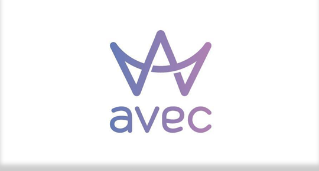

<ion-menu [content]="content" type="overlay" color="avec">
  <ion-header>
  </ion-header>

  <ion-content class="content-menu" color="avec">
    <div class="logo-menu">
      
    </div>
    <ion-list>
      <button menuClose ion-item *ngFor="let p of pages" (click)="openPage(p)" color="avec">
        {{p.title}}
      </button>
      <button menuClose ion-item *ngFor="let ep of ePages" (click)="openExternalPage(ep)" color="avec">
          {{ep.title}}
        </button>
    </ion-list>
  </ion-content>

</ion-menu>

<ion-nav [root]="rootPage" #content swipeBackEnabled="false"></ion-nav>